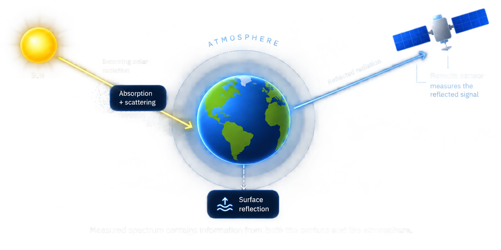

Section 1
What happens to light in the atmosphere?
A remote-sensing instrument does not observe Earth's surface in isolation. Before light reaches a sensor, it has interacted with the atmosphere and those interactions change what the instrument measures.

In reflected-solar remote sensing, sunlight first travels downward through Earth's atmosphere. Along the way, gases and particles can absorb light at particular wavelengths or scatter it in different directions. The remaining light reaches Earth's surface, where some wavelengths are absorbed and others are reflected. That reflected light then travels upward through the atmosphere before reaching a satellite or airborne sensor.
The spectrum measured by the sensor therefore
contains information about both the
surface
and the
atmosphere
between the surface and the instrument.
The atmosphere doesn't just block light—it leaves
information in it.
Technical note: absorption vs. scattering
Absorption occurs when atmospheric molecules interact with radiation at characteristic wavelengths. Gases such as O₂, H₂O, and CO₂ therefore produce recognizable features in measured spectra.
Scattering changes the direction in which radiation travels. Its strength and wavelength dependence depend on the molecules or particles involved, so scattering can also alter the signal measured by a remote sensor.
Section 2
Why do wavelengths matter?
The atmosphere does not affect every wavelength in the same way. Some spectral regions change strongly while others remain relatively stable—and those differences can carry useful physical information.
Molecules absorb radiation at characteristic wavelengths, producing patterns of spectral features that act like physical fingerprints. One especially important region lies near 760 nanometers, where molecular oxygen (O₂) produces a dense collection of absorption lines known as the O₂ A-band. Because molecular oxygen is well mixed in Earth's atmosphere, measurements within this spectral region can contain information about atmospheric optical path length and other properties of the light's journey through the atmosphere.
Synthetic O₂ A-band spectrum
Synthetic / educational dataHover to inspect the spectrum. This curve is a simplified educational representation of oxygen absorption—not measured or published research data.
Section 3 · Try it yourself
If you could measure only five wavelengths, which five would you choose?
Measuring more data is not always the same as measuring more useful information. Your challenge is to choose five wavelengths that make several simulated spectral signatures as easy to distinguish as possible.
Each dashed curve represents a different synthetic spectral signature corresponding to a different simulated atmospheric condition. Click five locations on the spectrum where you think the curves are easiest to tell apart.
This score estimates how far apart the synthetic signatures are, on average, when the comparison is restricted to your five selected wavelengths. Higher values indicate greater separation in this educational model.
Section 4
Can computation choose better measurements?
Instead of choosing wavelengths by eye, a computer can systematically evaluate many possible combinations and ask a simple question: which five make the simulated signatures easiest to distinguish?
The demonstration searches every possible five-wavelength combination within a small candidate grid. Each combination receives a separability score based on the average pairwise distance between the simulated signatures when only those five wavelengths are used.
This is a transparent educational optimization—not a black-box AI system and not a reproduction of an unpublished research algorithm. The goal is to make the basic idea of measurement optimization visible and understandable.
Your selection
—
— separability
Optimized selection
—
— separability
Choose five bands in the section above first, then run the optimizer to compare your choices.
Section 5
What happens when measurements aren't perfect?
Real measurements contain uncertainty. A useful measurement strategy should not work only under ideal conditions—it should remain informative when noise is introduced.
This demonstration repeatedly adds simulated random noise to the synthetic signatures and tests whether they can still be identified correctly. Repeating the experiment many times is called a Monte Carlo simulation.
For each noisy observation, a simple nearest-signature classifier compares the measurement with the reference signatures using Euclidean distance at only the five selected wavelengths. The result shows how classification performance changes as noise increases.
Choose five bands and run the optimizer above first, then run the noise simulation.
The key lesson
Physical knowledge + good measurements + computation can extract a lot from a complicated spectrum.
This demonstration illustrates one approach to choosing informative spectral measurements — not the only approach, and not a finished research result. The broader idea generalizes far beyond five bands near 760 nm: knowing where to look is often as important as how well you can measure.
Section 6 · A related idea, a different lab
PNNL: physics-informed machine learning
Researchers at Pacific Northwest National Laboratory (PNNL) apply a related philosophy to a different remote-sensing problem: atmospheric correction.
As Section 1 explained, the spectrum a satellite measures is shaped by the atmosphere on the way down and on the way back up. Atmospheric correction is the process of estimating and removing those atmospheric effects so scientists can recover the true surface signal underneath.
PNNL's approach explores physics-informed machine learning: instead of treating atmospheric correction as a purely data-driven, black-box prediction problem, known physical relationships about how radiation interacts with the atmosphere are built into the model itself.
Data-only machine learning
Physics-informed machine learning
Why incorporate physics at all? Training data for atmospheric correction can be limited, expensive to collect, noisy, or simply not cover every real-world condition. When the underlying physics is already well understood, building it into the model can help fill those gaps, keep predictions physically plausible, and reduce how much a model has to "learn from scratch."
Two distinct ideas, clearly separated: the five-band spectral optimization demo above is inspired by separate research into passive atmospheric sensing. It is not PNNL's atmospheric-correction method, and this site does not reproduce PNNL's model. They share a philosophy — using physical understanding to get more out of limited measurements — but they are different techniques applied to different problems.
Section 7
Why atmospheric correction matters
Accurately separating atmospheric effects from surface signals underpins a wide range of real-world Earth observation work.
Environmental monitoring
Tracking land cover, water quality, and ecosystem change over time depends on surface signals being consistent from one measurement to the next.
Vegetation & drought analysis
Vegetation health indices rely on accurate surface reflectance — atmospheric contamination can distort what looks like plant stress versus a clear sky.
Atmospheric studies
The same absorption and scattering effects that complicate surface retrievals are, from another angle, exactly what scientists use to study the atmosphere itself.
Emissions & plume detection
Identifying gas plumes from industrial or natural sources requires distinguishing subtle atmospheric absorption signatures from background noise.
Coastal & ecosystem monitoring
Coastal and inland water studies are especially sensitive to atmospheric correction quality, since water surfaces reflect relatively little light to begin with.
Section 8 · Get involved
How students get into this work
This kind of research sits at the intersection of physics, data, and software — and there are real, well-trodden paths into it.
Physics · Earth Science · Engineering · Computer Science
Python · spectroscopy · remote sensing · statistics · machine learning
Undergraduate research · internships
A DOE National Laboratory
Remote Sensing Scientist
Designs and interprets measurements from satellites, aircraft, or ground instruments to study the Earth's surface and atmosphere.
Atmospheric Scientist
Studies how the atmosphere behaves and interacts with radiation — the science behind correction and interpretation methods.
Data Scientist
Builds statistical and machine-learning models to extract patterns and signals from large, complex scientific datasets.
Computational Scientist
Develops the algorithms and simulation tools — like the optimization and Monte Carlo methods on this page — that make large-scale analysis possible.
Research Engineer
Turns scientific methods into working software and instruments that other researchers can actually use.
Section 9
About this interactive demonstration
This educational tool combines two related perspectives on atmospheric remote sensing. The spectral-band selection demonstration is inspired by optimization concepts explored by Tamta Burduli during research in passive atmospheric sensing, and is presented here using synthetic educational data. The physics-informed machine-learning section communicates separate research conducted at Pacific Northwest National Laboratory (PNNL) and does not reproduce PNNL's research model.
Built for the URA STEM Ambassador Challenge to translate DOE National Laboratory-style research into a public, interactive format.
Section 10
Sources & references
- Pacific Northwest National Laboratory — physics-informed machine learning for atmospheric correction. Add the specific PNNL article/publication URL here.
- Background on the O₂ A-band and atmospheric oxygen absorption. Add a public spectroscopy reference here.
- General remote-sensing / atmospheric-correction background. Add a public reference here.
Reference links are placeholders — add the exact PNNL publication and any other sources you cite before publishing, so nothing here is unattributed.